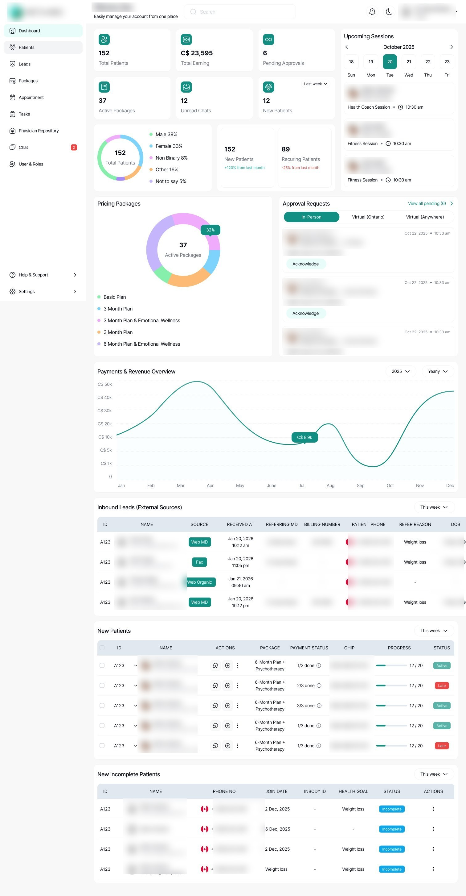

Case 02 · Digital health · Canada
Metamed is a physician-led metabolic health practice. Patient records, appointments, body composition data and every conversation lived in different places. They didn't want another tool. They wanted one product they owned.
Role
Product & Project Manager
Duration
18 sprints, 3 milestones
Surfaces
Patient app, clinician dashboard, API
Scope
32 epics

01
A clinician said, in effect: everything is on paper and WhatsApp, and I can't see how my patients are actually doing.
That single sentence contained the whole problem. New patients filled in six pages of paper history that somebody then re-keyed. Conversations happened over WhatsApp, which meant they were scattered across personal phones and impossible to review. Body composition scans lived in the machine that produced them. Appointments lived somewhere else again.
Nobody could see a patient's whole journey in one place, least of all the clinicians responsible for it. Every hour spent reconciling systems was an hour not spent on care, and the practice couldn't grow past the limits of manual work.
The brief was consolidation. Not a new point solution to add to the pile, but one platform the practice owned, with the tools they already trusted pulled inside it.
02
I ran this end to end: discovery through release, with a cross functional team across engineering, design and technical leadership. Ceremonies, backlog, quality validation and client reporting were mine.
MILESTONE 1
Secure login, digital intake forms replacing paper, in app messaging, and a basic clinician dashboard.
MILESTONE 2
Body composition data pulled in automatically, a progress dashboard, and care plans clinicians could assign from templates.
MILESTONE 3
Appointment management, direct access to the care team, end to end QA, and deployment.
03
Every one of these cost something. That's what makes them decisions rather than preferences.
04
0
sprints to MVP
0
milestones, each a whole workflow
0
epics scoped and sequenced
0
surfaces delivered
A practice running on paper, WhatsApp and disconnected systems now runs on one platform it owns, cleared through app review as a regulated health product handling payments and health data.
Metamed was at MVP stage, validated with 10 to 15 external testers before client handoff. These are delivery outcomes, not adoption numbers, and I'd rather say so than dress them up.
05
Close the scope at the start, and stop entertaining scope creep.
I let scope stay open. Every new idea got a hearing, and a hearing is already a cost: it moves sequencing, reopens settled decisions, and turns a defined milestone into a negotiation. Milestone one shipped, but slower than it needed to, because the boundary around it kept moving.